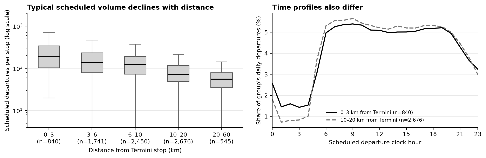
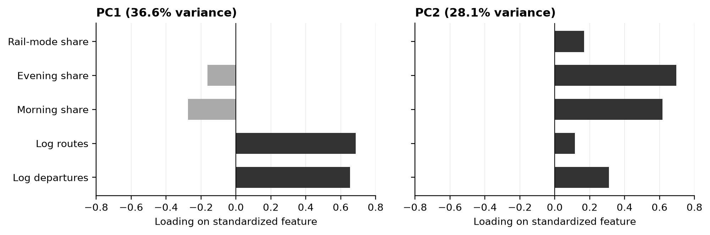

Selection analysis
Loading the timetable…
VIEW 01 · GEOGRAPHY
Scheduled stops across Rome
Brush a rectangle or click a stop
Each dot is one scheduled stop. Dark dots are the current selection, from any view. Coordinates come from the GTFS stop table.
VIEW 02 · STOP PROFILES
Service patterns (PCA)
Brush a rectangle or click a stop
PCA summarizes scheduled departures, route diversity, morning and evening shares, and rail-mode share.
VIEW 03 · TIME PROFILE
Departures by clock hour
Drag across hours or click one
Bars: share of scheduled departures in each clock hour, for all stops and for the selection. Dragging selects stops whose busiest scheduled hour falls in the range. Times after 24:00 are folded to their clock hour.
VIEW 04 · SERVICE VOLUME
Scheduled departures per stop
Drag across bins or click one
Bars: share of each group’s stops in each departure-count bin (logarithmic bins). Dragging selects all stops in the chosen bins.
VIEW 05 · ROUTE DIVERSITY
Distinct routes per stop
Drag across bins or click one
Bars: share of each group’s stops by number of distinct routes calling there. Dragging selects those stops.
VIEW 06 · DISTANCE
Distance from Termini
Drag across bands or click one
Bars: share of each group’s stops by straight-line distance from the GTFS Termini stop. A geographic descriptor, not accessibility.
VIEW 07 · BUSIEST STOPS
Busiest stops citywide
Lists the busiest stops inside the current selection; click one to select it
Counts are scheduled stop departures for the selected service date; they are not passenger counts.
How to interpret this view
All seven views coordinate in both directions: each can set the shared stop selection by brushing or clicking, and each redraws to show it. Every selection triggers a new selected-versus-remaining median comparison and recomputes the distributions in views 03–06 and the ranked list in view 07. The first two PCA axes explain — of standardized feature variance. A point's PCA distance is a summary of five features, not a route distance.
This is a static schedule for Wednesday 18 November 2026, retrieved 16 November. It does not measure vehicle arrivals, delays, crowding, demand, or access. The feed can change. See the data audit and method details.
EVIDENCE FROM THE SAME SNAPSHOT
Analysis figures
Static companion figures for the paper

